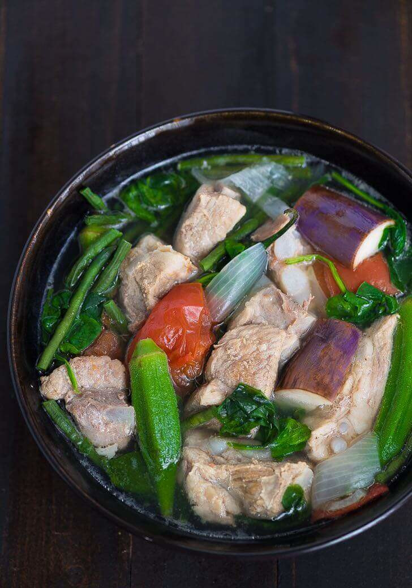

How to Cook Pork Sinigang

Sinigang is a sour soup native to the Philippines. This recipe uses pork as the main ingredient. Other proteins and seafood can also be used. Beef, shrimp, fish are commonly used to cook sinigang.
The quality of the dish depends on the souring agent. This is the ingredient that makes the soup sour. The most common and widely used is unripe tamarind.
Sinigang Alternative Ingredients
This sinigang version makes use of pork belly. Any cuts of pork can be used to make it.
Sinigang mix is a powdered product that helps bring-in that good sour taste to sinigang. Old school methods require boiling either fresh your tamarind or bilimbi for a long time until the flavors are extracted.
How to Cook Pork Sinigang
Ingredients
- 2 lbs pork belly
- 1 bunch spinach
- 3 tablespoons fish sauce
- 12 pieces string beans cut in 2 inch length
- 2 pieces tomatoes quartered
- 3 pieces chili
- 1 tablespoon cooking oil
- 2 quarts water
- 1 piece onion sliced
- 2 pieces taro, gabi quartered
- 1 pack sinigang mix-good for 2 liters of water
Instructions
- Heat the pot and put in the cooking oil.
- Sauté the onion until its layers separate from each other.
- Add the pork belly adn cook until outer part turns light brown.
- Put in fish sauch and mix with the ingredients.
- Pour the water and bring to a boil.
- Add the taro and tomatoes and then simmer for 40 minutes or until pork is tender.
- Put in the sinigang mix and chili.
- Add the string beans (and other vegetables if any) and simmer for 5 to 8 minutes.
- Put in the spinach, turn off the hear, and cover the pot. Let the spinach cook using the remaining heat in the pot.
- Serve hot, share, and enjoy!
Return to the top
Return to Main Menu